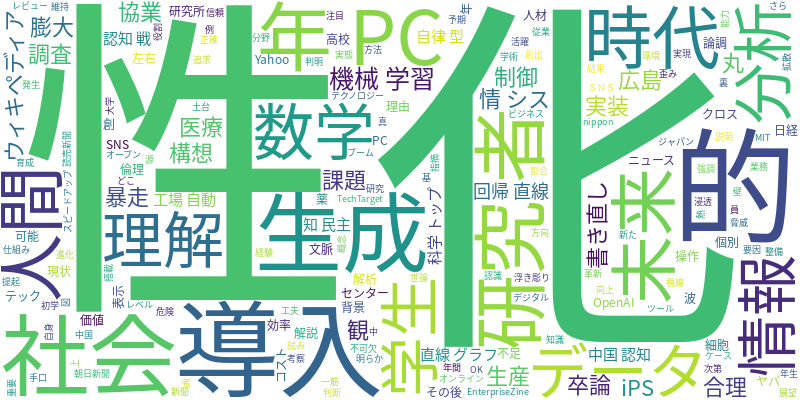

☁️ 今日のトレンドワード

📰 今日のピックアップニュース (10件)
情シス30年、PCからAIまで生産性向上は提供方法次第
30年間情シスとして活躍してきた経験から、PCからAIまで、時代は変わっても「どのようにITツールを提供するか」が、その後の従業員の生産性を大きく左右することを説く。単なる導入ではなく、活用できる環境整備の重要性を強調する。
AIの真の脅威は「暴走」より「合理的すぎる」未来
AI研究者が恐れるのは、AIが暴走することではなく、あまりにも合理的すぎる判断を下すことで生じる、人間社会にとって予期せぬ「ヤバい未来」である。倫理観や人間的な価値観を持たないAIが、効率のみを追求した結果、社会に歪みをもたらす可能性を指摘する。
高校数学で理解！機械学習を回帰直線のグラフで
高校1年生の数学レベルで機械学習の概念を理解できるよう、回帰直線のグラフ表示を例に解説。数学的な知識を土台に、機械学習の仕組みを分かりやすく説明し、初学者でも理解を深められるように工夫されている。
2026年、企業が「AI PC」に熱視線
2026年に入り、企業が「AI PC」に注目し始めた背景を解説。AI機能が搭載されたPCが、業務効率化や新たな価値創出に不可欠と認識され始めている現状を伝える。その導入が進む理由を探る。
SNS分析AIで中国の「認知戦」を調査
中国が仕掛ける「認知戦」の実態を調査するため、文脈から「論調」を解析するAI新技術が活用されている。SNS上の膨大な情報をAIで分析し、世論操作や情報操作の手口を明らかにする試みを報じる。
AIと協業しiPS細胞の社会実装へ
iPS細胞の社会実装に向けて、AIと人間の協業が進んでいる。膨大なデータをAIが分析することで、個別化医療の実現や創薬のスピードアップを目指す。AIの活用が医療分野に革新をもたらす可能性を示す。
AI時代、ウィキペディアは「知の民主化」を守れるか
「知の民主化」を掲げ25年続くウィキペディアが、AIの波にどう対応していくのかを考察。AIによる情報生成や拡散が進む中で、正確で信頼できる情報源としての役割を維持できるのか、その課題と展望を探る。
OpenAI科学トップ、自律型AI研究者構想
OpenAIの科学トップが、データセンターを研究所として活用し、「自律型AI研究者」を構想していることを明かす。AI自身が研究を進める未来図を描き、AIのさらなる進化の方向性について語る。
工場自動化の壁、制御AI未導入54％
工場の自動化を阻む要因として、制御AIが未導入の割合が54％に上ることが判明。コストや人材不足がその背景にあり、AI技術の浸透にはまだ課題が多い現状が浮き彫りになる。
卒論に生成AI、広島で「丸投げ」学生が書き直し
広島の大学で、卒論に生成AIを利用した学生が「丸投げ」と見抜かれ、書き直しを命じられるケースが発生。生成AIの利用に関する倫理観や、学生の学術的な能力育成における課題を提起する。
今日のAI・テック業界は、AIの「合理的すぎる」未来への懸念が深まる一方、その実用化に向けた具体的な動きも活発化している。OpenAIが「自律型AI研究者」構想を掲げ、iPS細胞の社会実装ではAIと人間の協業が進むなど、AIが社会の根幹に関わる領域で活用され始めている。教育現場では生成AIの利用が問題視される中、高校数学レベルで機械学習を理解させる試みもあり、AIリテラシー教育の重要性が増している。また、AI PCの普及や、SNS分析AIによる「認知戦」調査など、ビジネスや安全保障の観点からもAIの動向は注目されている。一方で、工場の自動化における制御AIの導入遅れは、コストや人材不足といった現実的な課題を示唆しており、AI技術の社会実装には多角的なアプローチが必要であることを物語っている。